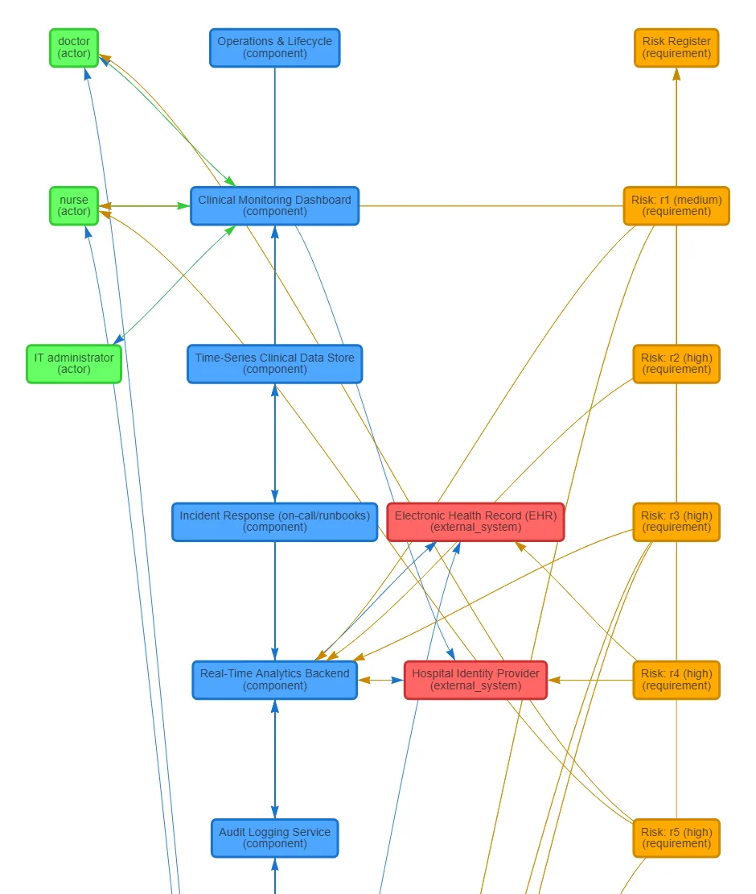

01Problem
System-context diagrams show who uses a system, what it is made of, what it talks to and where the risks are. They are usually drawn by hand from requirement documents. That is slow, varies from person to person, and is hard to trace back to the text.
The goal was to extract a machine-readable context model from a plain-English description with an LLM, show it as interactive diagrams, and make every extracted item traceable to the sentence it came from.
The project began as a three-person coursework project in the Data-Driven Engineering course. I then extended it on my own in nine phases, each measured against the same evaluation harness.
Build the evaluation first. The hand-labelled harness existed before any pipeline change, so every later change (structured outputs, retrieval, an agentic loop, a model swap) has a number attached to it.
02Architecture
A request flows through these stages. Retrieval only switches on for long inputs, and the agentic self-check is an option rather than the default, for reasons shown in the results.
- Input One or more system descriptions. Multiple documents are aggregated into one context model.
- Retrieval above 350 words Chunk, embed (qwen3-embedding-4b), rank by cosine similarity and keep the top-K chunks for each of 6 extraction categories. Pure Python with no vector database, which is enough at this scale.
- Structured extraction One LLM call constrained by a strict JSON schema (OpenAI Structured Outputs) instead of parsing free text.
- Validation and repair Pydantic v2 schema plus a cross-field referential-integrity validator that catches dangling entity references. On failure, up to 3 retries that feed the model its own error.
- Post-processing Deduplication, relationship labels normalised to 7 canonical verbs, and an evidence sentence attached to every entity, relationship, risk and assumption.
- Rule-based enrichment deterministic Adds functional and non-functional requirements, security and governance controls and operational components, and links risks to the controls that mitigate them. It is hand-tuned to the hospital reference scenario, so it only runs when the input matches that scenario. Any other input gets the LLM's extraction alone.
- Output JSON context model plus three interactive views (pyvis / vis-network): context and architecture, risk traceability, governance and requirements.
- LangGraph self-check optional A state machine: extract → critique → repair → critique, capped at 3 rounds. Measured, then kept off the default path.
The web app is served by Python's standard-library http.server. There's no web framework, by design: the app needs a handful of routes, not a framework's worth of dependencies.

03What I built, phase by phase
Each phase had one goal and one measurement. Open a phase for the details.
Phase 0Reproduce and verify
- Fixed a Python 3.13 incompatibility (the standard-library
cgimodule was removed) by writing a custom multipart form parser. - Found and fixed a double-HTTP-response bug that corrupted server responses whenever the LLM call failed.
- Verified the whole pipeline end to end against a real, live LLM call.
Phase 1Evaluation harness
- Designed and hand-labelled 5 test cases across 5 deliberately different domains.
- Wrote the scoring: fuzzy entity matching (token-Jaccard similarity with type gating), relationship-pair matching and coverage matching for risks and assumptions.
- Found and fixed a tokenizer bug in the harness itself ("Wi-Fi" vs "wifi") that produced false negatives.
Phase 2Reliable structured outputs
- Replaced regex-based "brace-hunting" JSON extraction with schema-constrained structured outputs.
- Designed a Pydantic schema with a custom cross-field referential-integrity validator.
- Added an automatic retry and repair loop (up to 3 attempts) that feeds the model its own error.
- Checked live that the API gateway actually supported structured outputs before building on it.
Phase 3Evidence and label normalisation
- Added an evidence field: every extracted item points to the sentence it came from.
- Built a lookup of 7 canonical relationship verbs, derived from 41 labels actually observed in earlier runs.
- Added two metrics for these features: evidence-grounded rate and label-normalisation coverage.
- Disproved my own first hypothesis about a score change with data and corrected the write-up.
Phase 4Retrieval (RAG) and multi-document input
- Built retrieval from scratch: chunking, embeddings, cosine ranking and top-K selection across 6 extraction categories.
- Calibrated the 350-word activation threshold from measured eval-case data instead of guessing it.
- Added multi-document upload and a 6th evaluation case: 3 documents, 431 words.
- Tested the retrieval filter in isolation with synthetic, mocked embeddings.
Phase 5Agentic self-validation (LangGraph)
- Implemented a LangGraph state machine with a 3-round safety cap.
- The critique checks three named issue types: missing actors, invented relationships and contradictions.
- Measured both the gain and the cost, and decided from that data not to make it the default.
Phase 6Model comparison
- Benchmarked the default ~30B mixture-of-experts model against an 8B model on the same gateway, measuring quality, latency and tokens together.
- Root-caused the smaller model's failure by inspecting outputs: a schema-filling failure on complex extraction, not a general inability.
Phase 7Testing
- A pytest suite across 5 files (65 tests at the time, 69 now), with no network access thanks to monkeypatching.
- Pinned every dependency to the exact tested version.
- A failing test exposed an undocumented edge case in the production deduplication logic.
Phase 8Docker, CI/CD and deployment
- Containerised the app and built a 2-job GitHub Actions pipeline: test suite, then a real Docker build with a running-container smoke test.
- Deployed to Render with Infrastructure-as-Code (a
render.yamlBlueprint), configured through environment variables.
Phase 9Documentation
- Rewrote the README as a five-minute read: problem, approach, results, how to run it.
- Kept the full methodology and the honest results, including corrected mistakes.
04Evaluation
Six hand-labelled cases across deliberately different domains: healthcare, e-commerce, IoT, fintech and logistics, plus a three-document ride-sharing case for multi-document input.
| What is scored | How |
|---|---|
| Entities | Fuzzy matching: token-Jaccard similarity, gated by entity type |
| Relationships | Pair matching between source and target entities |
| Risks, assumptions | Free-text coverage matching |
| Evidence | Share of items that trace to a real source sentence |
| Label normalisation | Share of relationship labels mapped to a canonical verb |
The harness scores the LLM's own extraction, before the rule-based enrichment runs. That keeps the numbers about what the model itself gets right, separate from the hand-tuned rules for the hospital scenario.
A hyphenation issue in the tokenizer ("Wi-Fi" vs "wifi") was producing false negatives. I found and fixed it, so the scores reflect the pipeline rather than the scorer.
05Results
Extraction quality
| Measure | Precision | Recall | F1 |
|---|---|---|---|
| Entities | 0.96 | 0.82 | 0.88 |
| Relationships | 0.81 | 0.84 | 0.82 |
| Measure | Value |
|---|---|
| Risk coverage | 94% |
| Assumption coverage | 100% |
| Evidence-grounded items | 100% |
| Relationship labels mapped to a canonical verb | 47–67% |
| Parse failures after structured outputs | eliminated |
Agentic self-check: better, at a price
- 0.879 → 0.924Entity F1 (+0.045)
- +0.004Relationship F1, within noise
- 4.7×More LLM calls per analysis on average
- 8 calls · 327 sWorst case for a single analysis
The gain is real and traceable: every repaired case added back an actor that the first pass had missed. But 4.7× the calls for +0.045 entity F1 and a flat relationship score didn't justify making it the default. It stays available as an option.
Model comparison: faster isn't the same as usable
I benchmarked the default model, a ~30B-parameter mixture-of-experts, against a smaller 8B model on the same API gateway and the same six cases.
- ~30B MoE (default)
- 8B (alternative)
| Model | Latency |
|---|---|
| ~30B MoE (default) | 42.4 s |
| 8B (alternative) | 9.2 s |
| Model | Tokens |
|---|---|
| ~30B MoE (default) | 1,831 |
| 8B (alternative) | 1,861 |
| Model | Entity F1 |
|---|---|
| ~30B MoE (default) | 0.88 |
| 8B (alternative) | 0.00 |
| Model | Relationship F1 |
|---|---|
| ~30B MoE (default) | 0.82 |
| 8B (alternative) | 0.00 |
Default-model F1 is the baseline from the same harness. The 8B model's structured output was unusable in all six cases, even though a one-sentence manual test had looked fine.
06Engineering
- 69 pytest tests across 5 files: deduplication, graph canonicalisation, scoring functions, schema validation, agentic-loop routing and the scenario gate of the enrichment layer. The suite runs in about a second with zero network calls.
- CI/CD: two GitHub Actions jobs on every push. One runs the tests, and the other builds the Docker image and smoke-tests the running container.
- Deployment: Render, defined as code in a
render.yamlBlueprint, with host and port taken from environment variables. - Reproducibility: every dependency pinned to the exact tested version.
- Fixes along the way: a custom multipart parser after Python 3.13 removed
cgi, and a double-HTTP-response bug that corrupted responses when the LLM call failed.
The LLM gateway is only reachable through the university VPN, so the public demo can't call it. Instead of faking a live call, the deployment bundles real, pre-generated outputs. What you see in the demo is genuine pipeline output.
07Lessons learned
-
Build the measuring stick first
With the harness in place before any change, each phase could be judged by a number instead of an impression.
-
Check reliability, not only speed and cost
The 8B model looked like an easy win: 4.6× faster at equal token cost. Only the harness showed that it produced nothing usable.
-
Every improvement has a price
The self-check loop improved entity F1, but at 4.7× the calls. Measuring both sides made the default-path decision straightforward.
-
Verify capabilities before building on them
I tested that the gateway supported structured outputs and embeddings before writing code that depended on them.
-
Your own tooling can be wrong
Fixing a bug in the harness, and correcting a hypothesis the data didn't support, is what made the final numbers trustworthy.